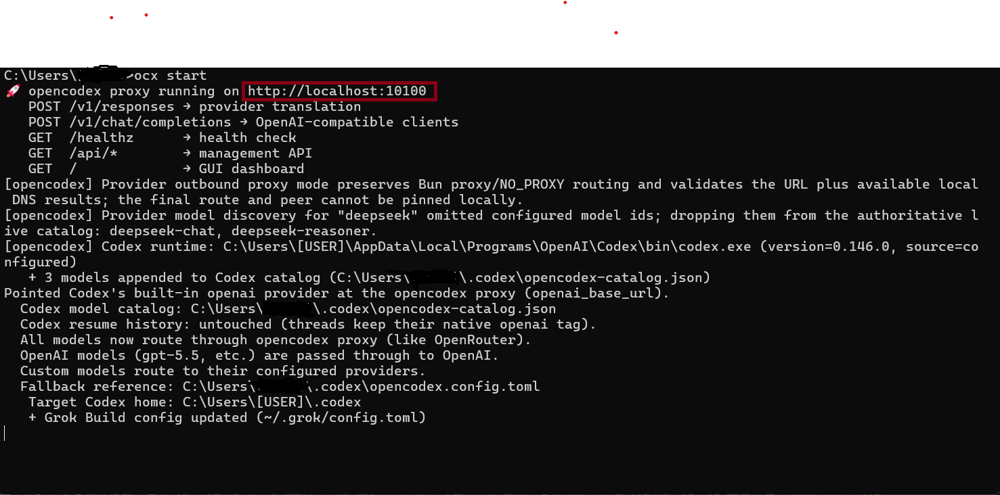
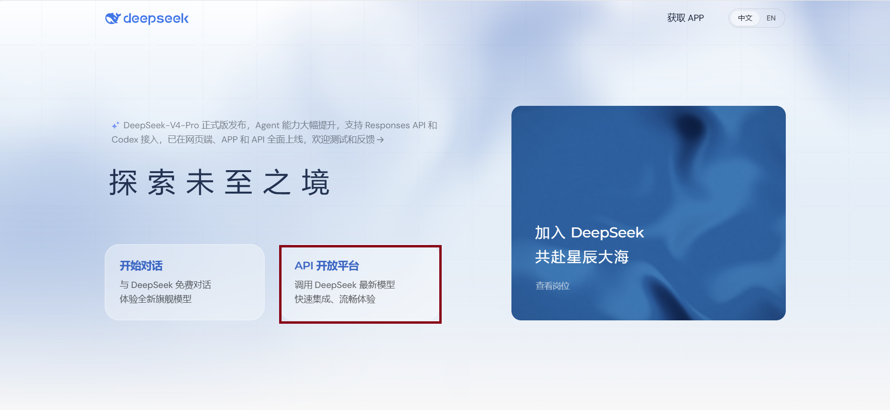
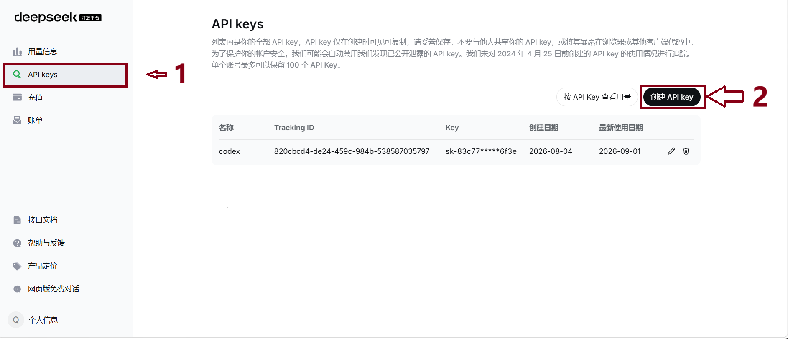
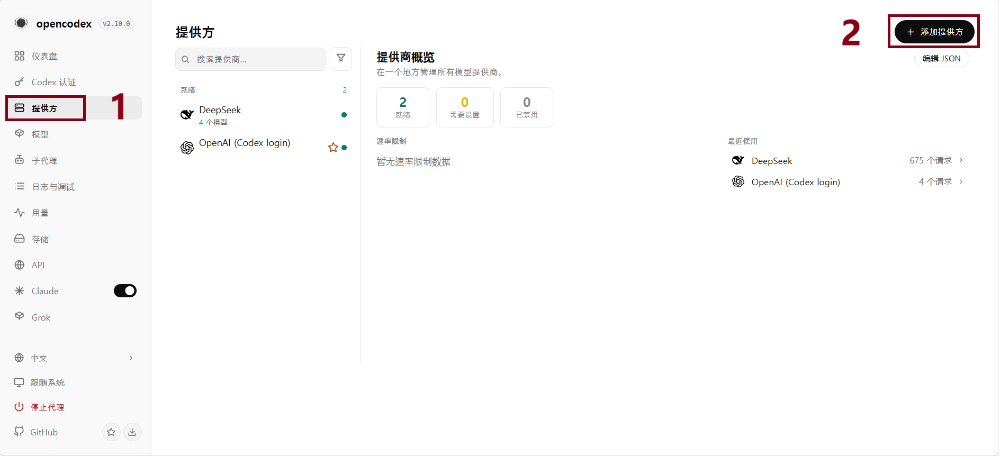
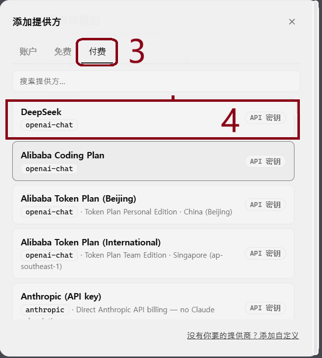
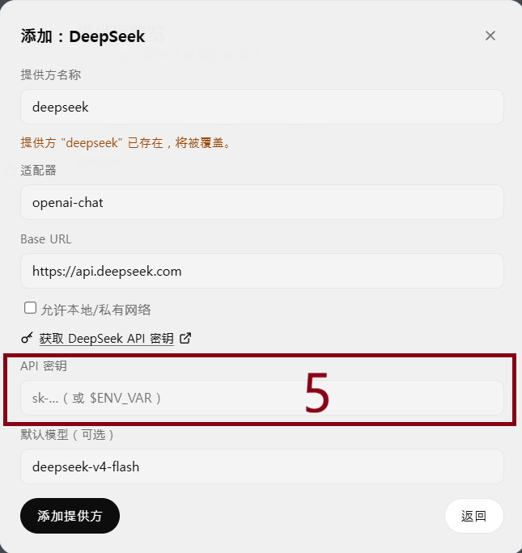

使用opencodex 将deep seek接入codex
opencodex 是一个开源的本地代理工具，它将 OpenAI Codex 的 Responses API 翻译为任意 LLM 提供商的协议，让 Claude Code、Codex CLI/App/SDK 都能无缝使用 Anthropic、Google、DeepSeek、GLM、Qwen 等 40+ 模型。
一、安装Open Codex
1、安装node.js环境
node.js下载地址：https://nodejs.org/zh-cn/download
验证node.js是否安装成功可以在cmd里面依次输入下面指令验证
node -v
npm -v
如果成功输出版本号那么则安装成功
2、安装opencodex
打开cmd，输入：npm install -g @ingwannu/opencodex
3、启动opencodedx
在cmd里面执行下面命令启动
ocx start

启动成功后，可以按CTRL+鼠标左键跳转红色框中的链接进入opencodex的后台，后续在这个后台中将其它模型的Api接入到opencodex，本文将以deep seek-v4-flash的模型为例子。
4、接入第三方大模型
deepseek官网：https://www.deepseek.com

进入API界面完成注册之后，按下图顺序点击

这里注意在创建完成后，请自行保留API keys并且不要泄露给他人，否则其他人也可以调用你的Api，避免造成不必要的损失。
5、将API接入opencodex
在获取完API keys之后我们进入opencodex的后台，按照以下顺序进行接入。http://localhost:10100


注意，opencodex由于官方维护的原因，可能您的界面会有所变化，不过这里我们的deep seek的API是付费的，所以我们选择付费的入口，假如你想选择其它厂商的API，根据界面对应选择入口即可。

我们将刚才获取的API keys完整的输入，到此deepseek的API就成功接入codex了。
6、如何使用
我们在使用codex前，请先在cmd控制台输入ocx start出现如图所示代码提示，证明启动成功。
然后我们通过科学上网,打开codex
「用心生活，认真做事。」返回首页